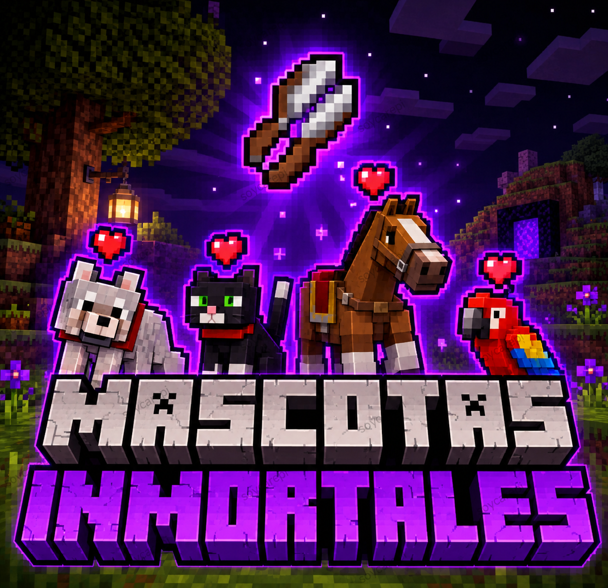
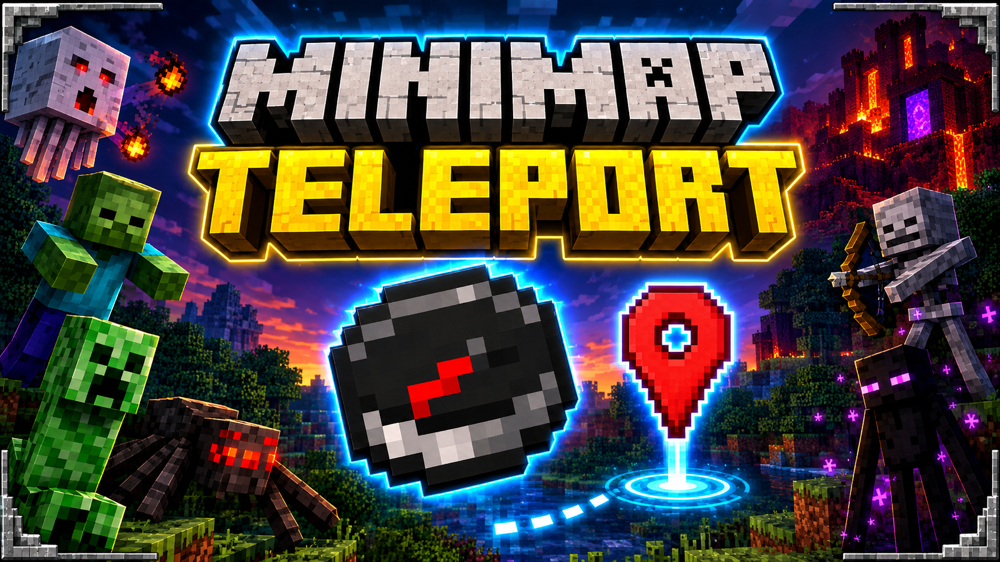
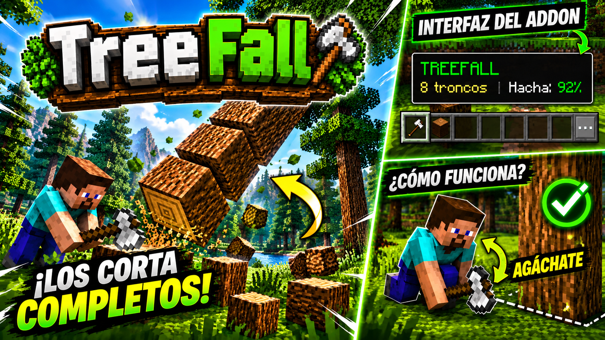

Mascotas Inmortales
Protege a tus mascotas de cualquier peligro en tus aventuras, también puedes quitar la domesticación cuando quieras.

Minimap Teleport
Guarda tus casas, minas o lugares importantes y Teletransportate a ellos ademas cuenta con Radar de mobs cercanos y vision nocturna todo en un solo addon y sin perder tus logros.

TreeFall
TreeFall hace que talar árboles sea más rápido y fácil al estar agachado.
Toolbelt
Mantén tus herramientas organizadas y accesibles con un extenso inventario con apartados para herramientas e inventario simple y compacto.